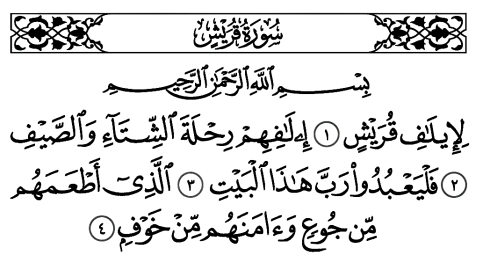

1 - En Arabe

2 - Traduction rapprochée
1. A cause du pacte des Qoraïsh,
2. De leur pacte [concernant] les voyages d'hiver et d'été.
3. Qu'ils adorent donc le Seigneur de cette Maison (la Kaaba).
4. qui les a nourris contre la faim et rassurés de la crainte!